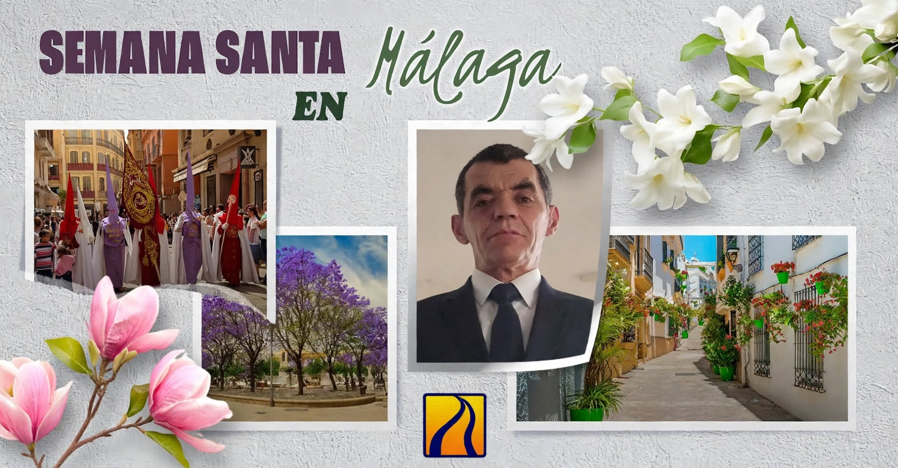

Bienvenido a la Pasión de Málaga
Descubre los itinerarios, tronos, imágenes e historia de una de las celebraciones más solemnes del mundo. Selecciona un día en el menú superior o pulsa el botón para comenzar el recorrido y pulsa cada imagen para ver su historia.

Comenzar Recorrido Descubrir las historias
Escucha una saeta al Cautivo
Saeta cantada por Diana Navarro al Cautivo de Málaga, en Semana Santa.